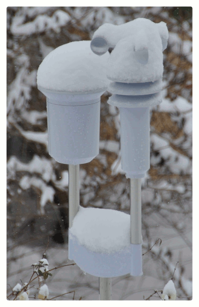

Keine Messwerte?

Schnee hat - leider - einen grossen Einfluss auf die Messergebnisse von
Wind und Niederschlag: zuerst füllt sich der Niederschlagssensor mit Schnee, dann vereist die Windmessung.
Aus diesem Grund sind die Messresultate von Niederschlag und Wind in den Wintermonaten mit Vorsicht zu
geniessen.